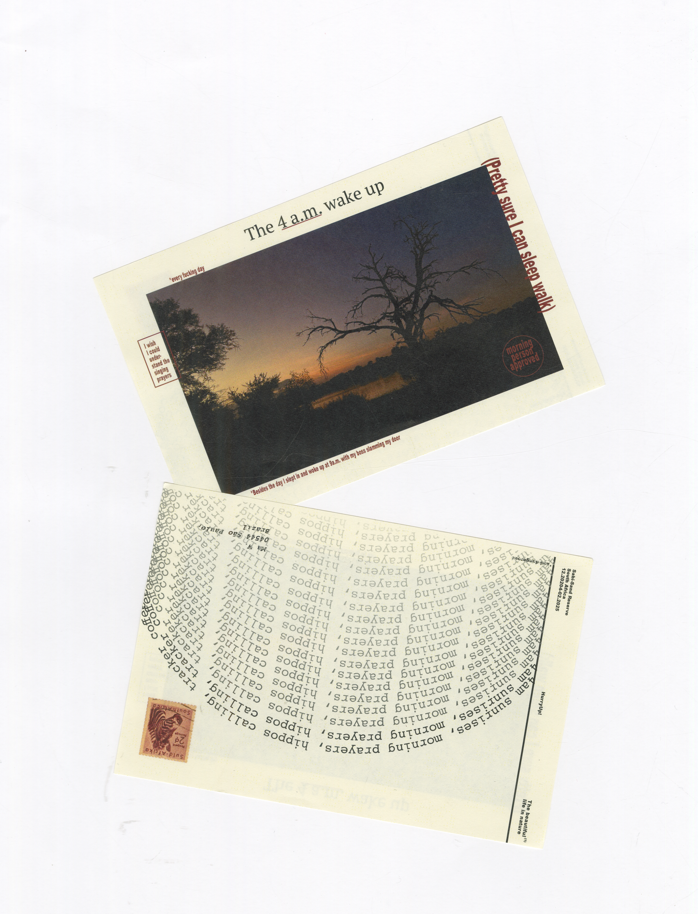
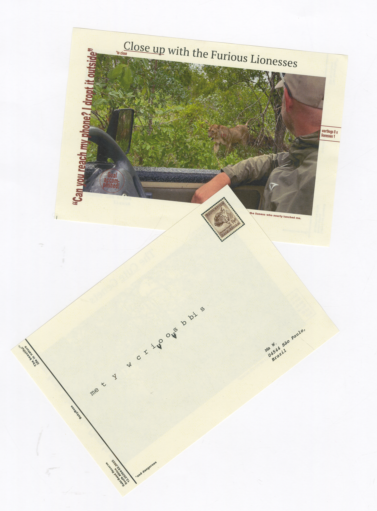
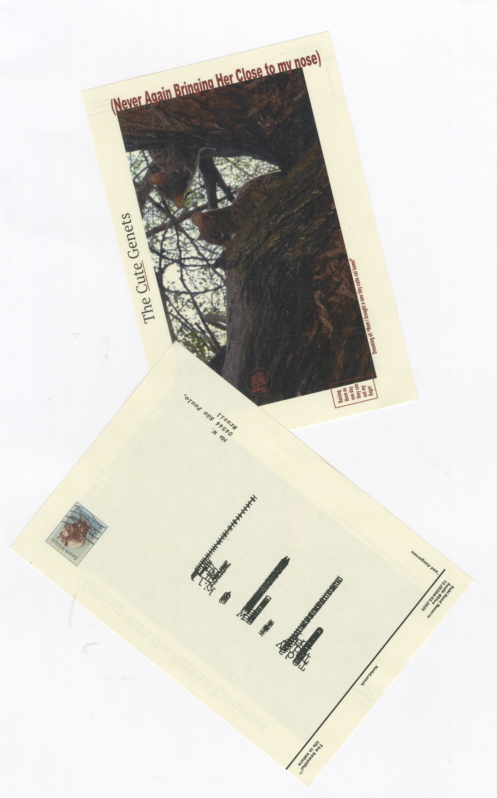
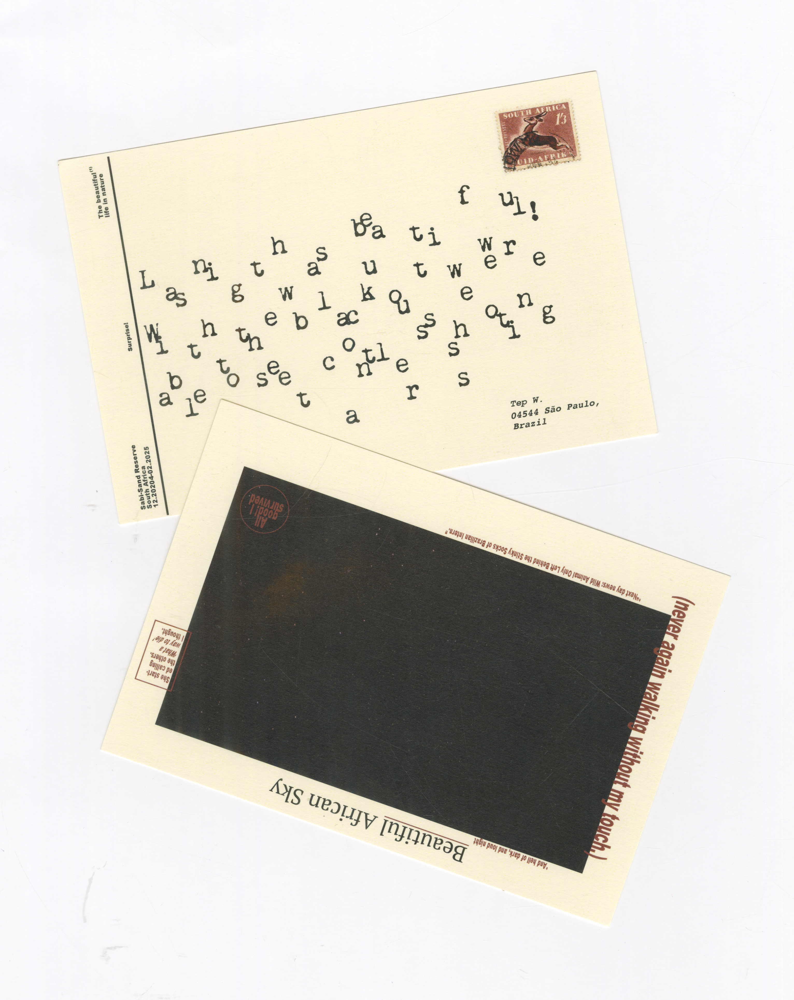
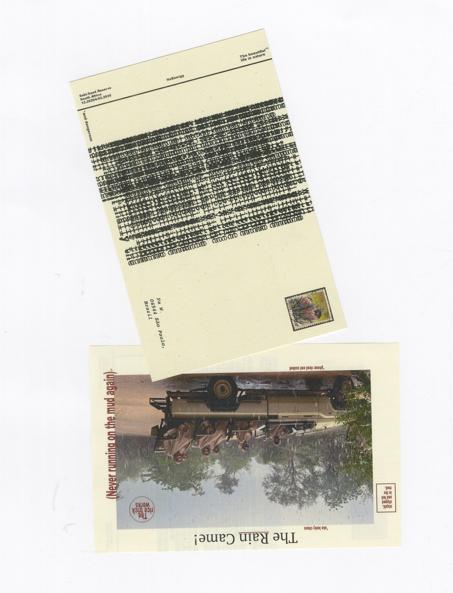
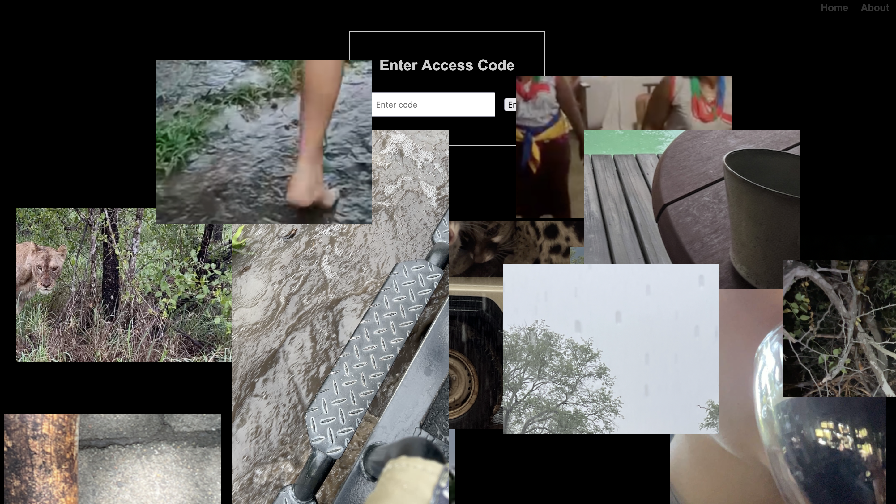

Wild Side
Spending two months in South Africa changed the way I understand the world, and myself.
It wasn’t just about the landscapes or the wildlife, though those were breathtaking.
It was about the people. The rhythm of daily life. The language, the food, the rituals, the stories shared.
The beauty is in the small moments: a conversation on a dirt road, a shared meal, a word you finally understand after hearing it enough times.
This project is a reflection of that time, an invitation to leave your comfort zone and step into something unfamiliar.
Participate in ecological projects in your neighborhood, go on a hike, learn a new language, listen to an elder, try something new.
Because only when we are open to the world, can we really see it. True understanding doesn't come from looking. It comes from living.
You can visit the website at:
Wild Side
Codes: HurryUp! / BabyBoss / NotaLunch / Noenergy / Surprise!






